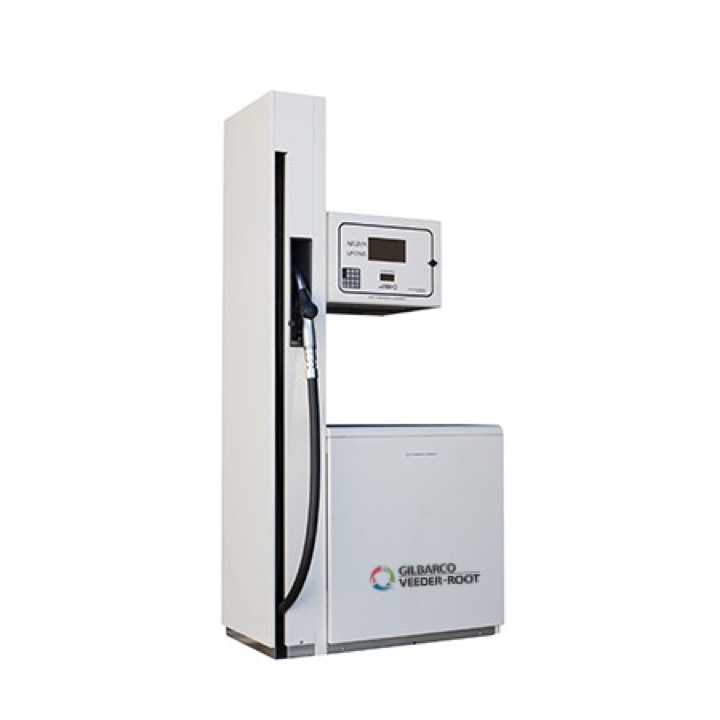

ТРК Gilbarco SK-700-II OR 2-1-2 С
Gilbarco Veeder- Root
Раздел: Всасывающие ТРК · АЗС
| Количество видов топлива | 1 |
| Количество рукавов | 2 |
| Скорость выдачи топлива | 40 |
| Тип гидравлики | Всасывающая |
Цена и наличие — по запросу. Поставляем оригинал и аналоги. Доставка по России.
Модификации и размеры (4)
- ТРК Gilbarco SK-700-II OR 4-2-4 С
- ТРК Gilbarco SK-700-II OR 8-4-8 С
- ТРК Gilbarco SK-700-II OR 6-3-6 С
- ТРК Gilbarco SK-700-II OR 2-1-2 С
Подберём нужный вариант — уточните при запросе.
Описание
ТРК Gilbarco SK-700-II OR 2-1-2 С производства Gilbarco Veeder- Root — позиция из раздела «Всасывающие ТРК» для АЗС. Компания SYNDICAT поставляет оборудование и комплектующие для автозаправочных и газозаправочных станций по всей России. Цена и наличие «ТРК Gilbarco SK-700-II OR 2-1-2 С» — по запросу: оставьте заявку или позвоните, подберём оригинал или аналог и рассчитаем доставку.